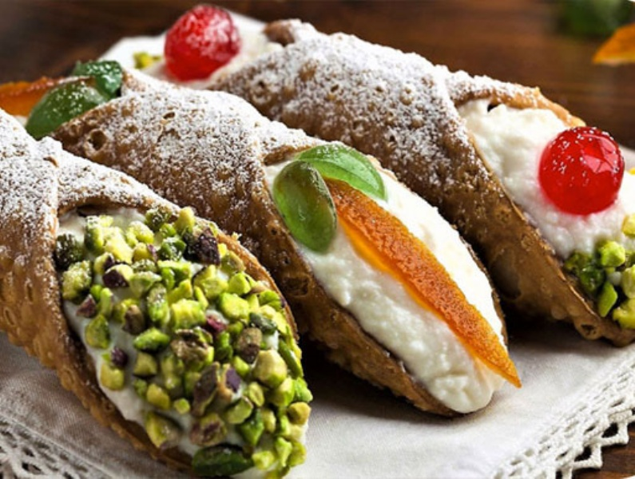

Cannoli Siciliani Tradizionali
Un simbolo immortale della pasticceria siciliana. Una scorza croccante, bolliciosa e profumata al Marsala, ripiena di una vellutata crema di ricotta di pecora arricchita con gocce di cioccolato e arancia candita.

Ingredienti
Per la Scorza (Cialda):
- 250g di Farina 00
- 30g di Zucchero semolato
- 30g di Stutto (o burro)
- 1 Uovo medio
- 50ml di Marsala secco
- 1 cucchiaino di Cacao amaro in polvere
- 1 cucchiaino di Aceto di vino bianco
- 1 pizzico di Sale fino
- q.b. Olio di semi d'arachide per friggere
Per la Farcitura:
- 500g di Ricotta di pecora (ben scolata)
- 150g di Zucchero a velo
- 80g di Gocce di cioccolato fondente
Per Decorare:
- q.b. Scorze d'arancia candite o granella di pistacchio
- q.b. Zucchero a velo per la superficie
Procedimento
- Preparazione della crema di ricotta: Fai sgocciolare la ricotta per qualche ora. Lavorala poi in una ciotola con lo zucchero a velo fino a renderla cremosa, quindi setacciala con un colino e unisci le gocce di cioccolato. Fai riposare in frigo.
- Preparazione dell'impasto: In una capiente ciotola unisci farina, cacao, zucchero e sale. Aggiungi lo strutto, l'uovo, l'aceto e il Marsala a filo.
- Lavorazione e riposo: Impasta con energia per circa 10 minuti fino a ottenere un panetto sodo e omogeneo. Avvolgilo nella pellicola e lascialo riposare in frigorifero per 1 ora.
- Stesura della sfoglia: Stendi l'impasto molto sottile (circa 1-2 mm) usando la macchina per la pasta o un mattarello.
- Formatura delle scorze: Con un coppapasta ovale (o tondo da 10 cm), ricava dei dischi. Avvolgi ogni disco attorno alle canne metalliche per cannoli, spennellando un lembo con poco albume d'uovo per sigillarli bene.
- Frittura: Friggi i cannoli in abbondante olio caldo a 170-180°C fino a quando la scorza non forma le tipiche bollicine e diventa dorata. Scola su carta assorbente e sforma dalle canne solo quando sono tiepidi.
- Farcitura e Servizio: Trasferisci la crema di ricotta in una sac-à-poche e farcisci i cannoli da entrambi i lati appena prima di servire. Decorali alle estremità con ciliegina, arancia candita o pistacchio e spolverizza con zucchero a velo.
💡 Note Finali e Consigli dell'Mastro Pasticcere
- Segreto della croccantezza: Farcisci i cannoli sempre **all'ultimo momento** prima di portarli in tavola; l'umidità della ricotta altrimenti ammorbidirà la cialda.
- Trucco anti-umidità: Per far durare la croccantezza più a lungo, puoi spennellare l'interno delle cialde già fritte e fredde con un velo di cioccolato fondente fuso prima di farcirle.
- Importanza dell'aceto e del Marsala: Non omettere l'aceto e il vino nella sfoglia: l'acidità al contatto con l'olio bollente è il vero segreto che fa creare le bolle friabili sulla crosta!